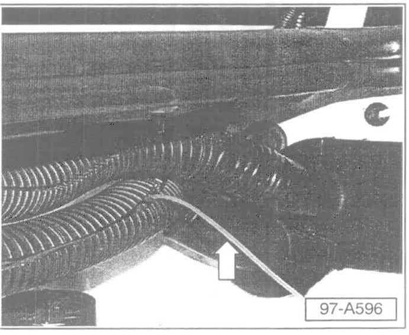
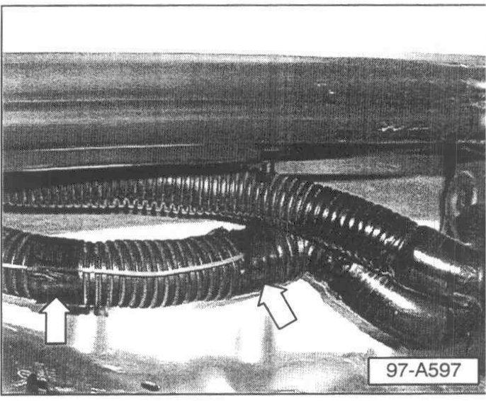
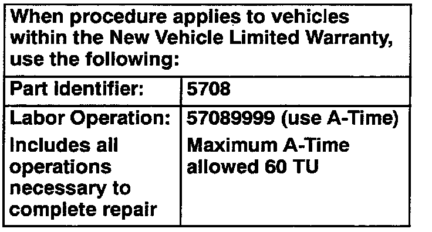

Keyless Entry - Remote Transmitter Range is Too Short
Group: 57Number: 03-03
Date: Sept. 16, 2003
Subject:
Effective Range of Remote Control Locking/Unlocking Too Short
Model(s):
Touareg 2004 > see VIN Below
Supersedes T.B. Group 57 number 03-01 dated Sept. 5, 2003 due to VIN correction
Condition
The distance required for remote control locking/unlocking function is too short.
Production
Improved as of VIN: WVGCM67L14D000927
Service
The remote control antenna, located in the wiring harness just below the right fender in the engine compartment, can be pulled through an opening in the protective tubing and spot-taped to the outside of the tubing.
^ This increases the operational distance of the remote control.
Use the following procedure to reroute remote control antenna:
- Remove plastic engine compartment covers.
- Disconnect connector to Mass Air Flow (MAF) sensor -G70-.
- Remove air filter cover and air filter.
- Loosen air intake.
- Loosen connecting hose between secondary air pump to air filter housing.
- Loosen air intake in air filter housing.
- Remove screws in air filter housing at upper left corner.
- Remove harness routing clips on air filter housing (2 clips).
- Remove screw on washer fluid reservoir filler neck.
Note:
Some washer fluid may spill.
- Remove air filter assembly.
- Remove oxygen sensor connectors from holding bracket.
- Remove screws for oxygen sensor connector holding bracket.
Note:
Screw for oxygen sensor holding bracket Part No: N910 400 01 which fastens to the upper suspension mounting bracket
^ Must be replaced on reassembly
^ Torque = 50 Nm +90 °when reassembling.
- Remove oxygen sensor connector holding bracket.
- Open coolant hose from coolant reservoir (engine side) and clamp to prevent coolant spillage.
- Move coolant reservoir as necessary to access wiring harness located on outboard side in engine compartment (under the inner fender edge)

- Open protective tubing from harness and pull antenna (arrow) gently through slit in tubing.

- Fasten antenna wire with electrical tape to outside of tubing. Spot-tape in two positions (arrows). Do Not use cable-ties.
- Check remote locking/unlocking for improved operation distance.
- Reinstall removed components.

Warranty Information